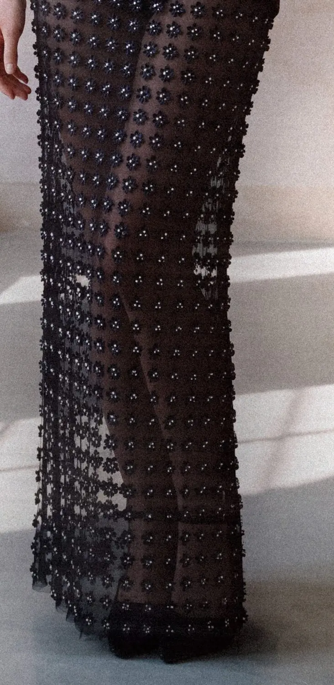

EVENING & BRIDAL COUTURE

1פתיחה בשכבותגלילה קטנה אחת, והתמונה נפתחת לבד
2סיבוב השמלההגב מתגלה לבד כשהתמונה במסך

מלפניםמאחור
The Open Back
רקמת חרוזים שחורה על טול בגוון עור, נבנית שורה אחר שורה.
3מסלול אופקיגלילה למטה, תנועה הצידה
הפרטים הקטנים הם השמלה.
כל פרט נתפר ביד, באטלייה.





5רקע שמשנה גווןלאורך כל הדף, בלי שמרגישים
עכשיו הרקע בגוון חול חם. בראש הדף הוא היה קרם בהיר, ובקטע הבא הוא יחזור לטיח.
6כותרת בצד או באמצעהחליפי בין שתי האפשרויות
THE ATELIER
שמלות ערב וכלה בתפירה אישית, נבנות על הגוף שלך.
כל שמלה מתחילה בשיחה ונגמרת במדידה האחרונה. בדים נבחרים, רקמות בעבודת יד וגזרה שנבנית במיוחד עבורך, כך שאין שתי שמלות זהות.